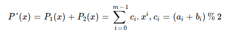
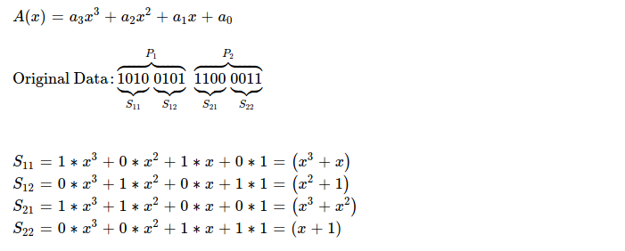
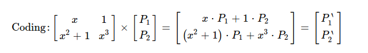
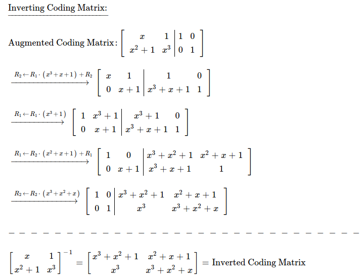
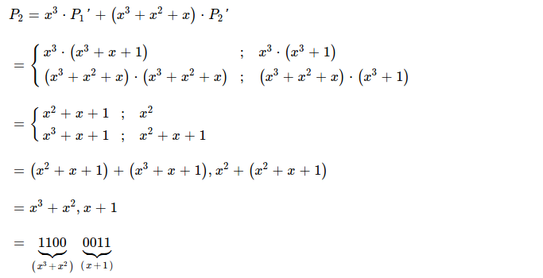
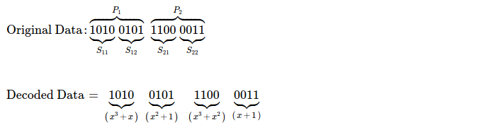
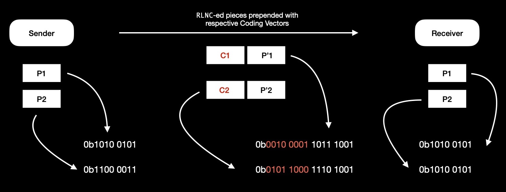

After exploring applications, benefits & disadvantages of Random Linear Network Coding,
I've decided to dig deeper into theory.
RLNC is a powerful construction for addressing several p2p networking problems. It can be
used for attaining Min Cut Max Flow capacity of underlying network graph. It can work
well in distributed fashion for network topologies which keep changing dynamically i.e. churn is high. Effectively
solving coupon collector's problem in p2p CDNs. It seems to be a good candidate for delay & disruption
tolerant network protocols too. There're several variations of how to code pieces. But I'm starting with
full network coding, where I take a whole data chunk & apply coding on all pieces.
Today I'll attempt to manually code a chunk of data & finally recover back original
data from coded pieces, using RLNC.
I've taken 0xa5c3 = 0b1010_0101_1100_0011 as 16-bit original
data chunk, which I'm splitting into N( = 2 ) equal sized pieces i.e. {0xa5, 0xc3}.
I define each symbol to be 4-bits i.e. 1 nibble. M-many symbols together make up ( read when concatenated ) one piece. Each piece
has exactly M-many symbols. In total, M * N -many symbols in data chunk.
For performing coding, I interpret each nibble as element of some Galois Field.
I choose to use GF(2 ^ 4) as the extension field of prime field GF(2). In extension field GF(2 ^ 4),
there're 16 possible elements, each generated using following rule.
GF(2 ^ m), where m = 4, I choose because I'm considering each nibble as a symbol.
| Binary | Polynomial |
|---|---|
| 0000 | 0 |
| 0001 | 1 |
| 0010 | x |
| 0011 | x+1 |
| 0100 | x2 |
| ... | ... |
I use x^4 + x + 1 as irreducible polynomial for field operations. When I add/ substract two elements ( read polynomials ) of GF(2 ^ 4), resulting polynomial's degree can't be > 3. Addition/ substraction is simply XOR --- it's defined as. Modular division 2 is performed because allowed polynomial coefficient can't be > 1, for prime field GF(2).
But result of multiplication can increase polynomial degree > (m - 1), hence element may not belong to GF(2 ^ m) anymore. For bringing it back to GF(2 ^ m), I choose to modulo reduce it with irreducible polynomial for GF(2 ^ 4).
Irreducible polynomials behave like prime numbers, having only 1 & self as factors.
Inverse of polynomial in GF(2 ^ m) is defined as
That's why inverse of x^3 + 1 is x --- (x * (x^3 + 1)) mod (x^4 + x + 1) = 1
Now I prepare symbols ( read nibbles ) as elements of GF(2 ^ 4).
I'll now create two coding vectors, each having two randomly drawn GF(2 ^ 4) elements, because I've N( = 2 ) pieces, each piece having M( = 2 ) symbols. I arrange those two coding vectors as M x N matrix & perform coding by multiplying random coefficients with original pieces.
Essence of coding is just performing following matrix multiplication. Obtained P'1 & P'2 is what's sent over wire, along with coding vectors.
For finding out P'1, I perform polynomial multiplication in GF(2 ^ 4) & obtain one coded piece 0b1011_1001. One point to note in coded piece construction is how symbols from different pieces are added together.
Similarly I construct other coded piece P'2, as result I get 0b1110_1001.
I've constructed both coded pieces as 0b1011_1001_1110_1001, which I'm going to send over wire along with respective coding vectors.
After recipient peer receives both coded pieces & respective coding vectors, I see
figuring out what original pieces are, is a linear algebra problem. One thing to note here,
while inverting coding matrix, GF(2 ^ m) rules need to be respected.
This is what piece decoding looks like from high level.
For finding inverse of coding matrix, I'm going to use Gaussian Elimination method.

Now I'm going to plug inverted coding matrix into decoding flow, as a result of it, I get
two equations for finding out values of P1 & P2 --- original pieces.
Solving equation for P1, decodes one coded piece. I get
0b1010_0101, which is exactly same as first original piece.
Solving for P2, gives me other decoded piece which also turns out to be same as original second piece.
Using RLNC, I've coded a 16-bit message into two pieces & correctly decoded coded ones to original pieces, in recipient process.
Source peer codes 16-bit whole data chunk into two pieces, using RLNC; wires codes pieces along with respective randomly drawn coding vectors, which says how pieces are coded together i.e. how much coding weight assigned to which piece; finally destination peer decodes & recovers original data chunk.
If I bring in one intermediate node, it doesn't need to get all coded pieces and then decode-encode, rather it can just re-encode available pieces by randomly drawing coefficients, while ensuring recoded pieces are actually associated with original pieces by multiplying newly generated coding vector at intermediate node with received piece's coding vectors i.e. coding matrix. It's a distributed coding protocol.
I wonder,
As next step, I plan to dig deeper into other network coding methods, while also
prototyping for collecting statistics & getting whole picture clearer.
Have a great time !